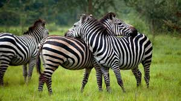
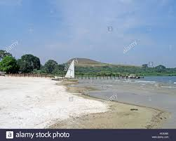
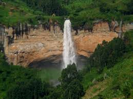
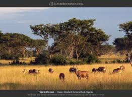

welcome to the happy trails travel agency uganda
Intek Travel was voted ‘Best Travel Agent’ in Uganda by the 2017 UTB ‘Tourism Excellence Awards’ and our team of expert travel consultants is dedicated,
highly professional and motivated in order to identify the best leisure travel solutions for our clientele.
Our motivated tours and safari team offers its substantial expertise to transform your holidays into a memorable experience.
All prices stated below are Per Person Sharing (PPS) in a double / twin room.
lake Mburo Take a break in the savannah type Lake Mburo National Park as this is the only park in Uganda that offers a combination of Eland, Impala Antelopes,
Giraffes and shares the Burchell Zebra with the Kidepo Valley National Park.

lakemburo.com
bulago island If you are looking for a 5 star weekend retreat, gourmet a la carte cuisine and a relaxed beach front atmosphere, Pineapple Bay is the place to go. Situated on the 500 acre, privately owned, Bulago Island in Lake Victoria
mt elgon national park Of the close to 5.000 Chimpanzees currently living in various forest reserves of Uganda,
the mt elgon Forest National Park alone is home to more than 1.400 and
represents the best opportunity to experience Chimp tracking.

mtelgon.com
Do you need to a write a letter for business, professional,
or employment purposes? The content and format of the letter you write will depend on the circumstances.
You may need to write a letter or email message to apply for a job or to contact a client.
Or perhaps you need to send an appreciation letter, a business announcement, or a resignation or retirement letter.
Read below to see a list of types of letters, as well as examples of each.
Also, review a list of elements to include in any business letter or email.

zoe.com